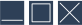
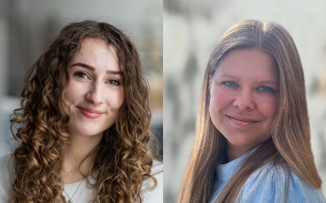
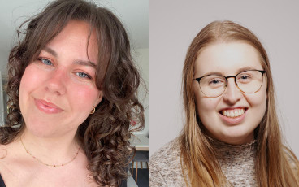
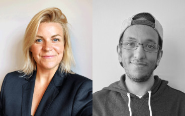
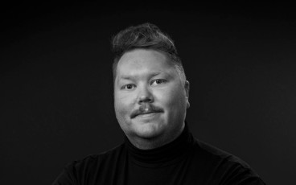
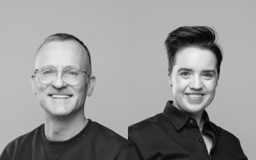
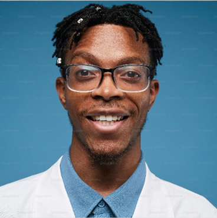

- 12. Mars
- kl. 12:00 - 16:00
- S309
- 500 seter
- 6 talere

Emne: Erfaring lære // experienta docet
Det er Temaet for årets designdag!
Designdagen er en årlig konferanse for designinteresserte studenter ved NTNU. Arrangementet er av og for medlemmer i Darling Linjeforening. Det er ingen påmelding, det er bare å komme!
Mer informasjon kommer snart!
Talere

Når design ikke fungerer for alle – tilgjengelighet og universell utforming i praksis
Kitty Toft og Tuva Strøm Kongshavn fra Tietovry

Fra skolebenk til arbeidsliv – en ærlig reise
Barbro Tande og Martine Woldseth fra Fremtind

Hvordan bygger man en app som utfordrer matvaner og inspirerer til å redusere matsvinn
Pia Haugseth og Mohamed Omar Said fra Sulten

Hva
Marius Hole fra Spoon

Hva
Kristine Gulheim og Kristian Tennebø fra Wal

Hva
hvem